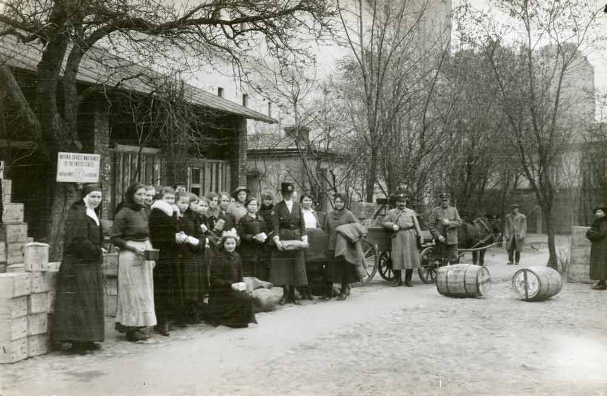
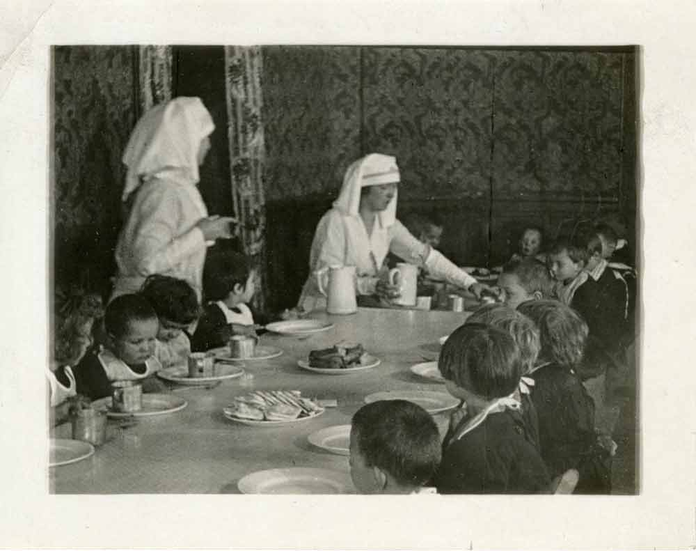
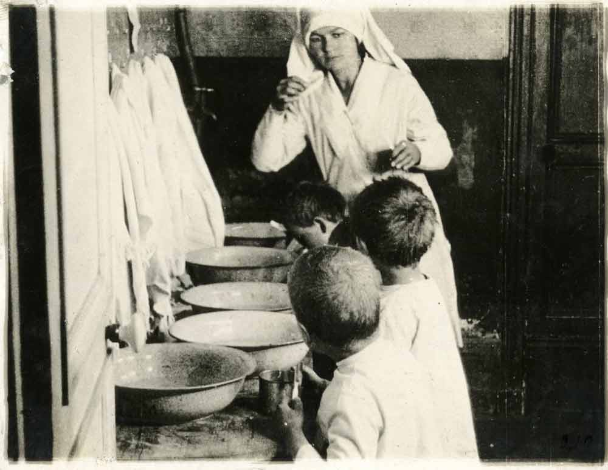
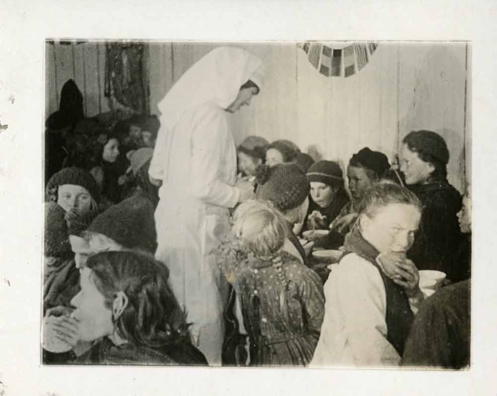
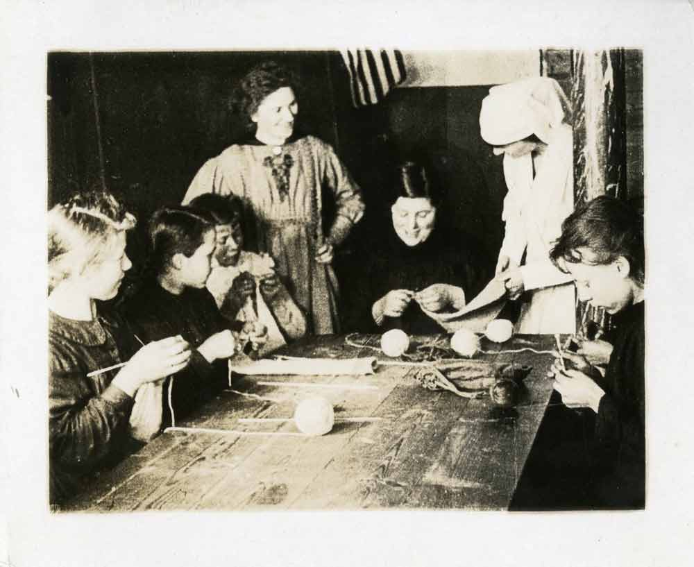
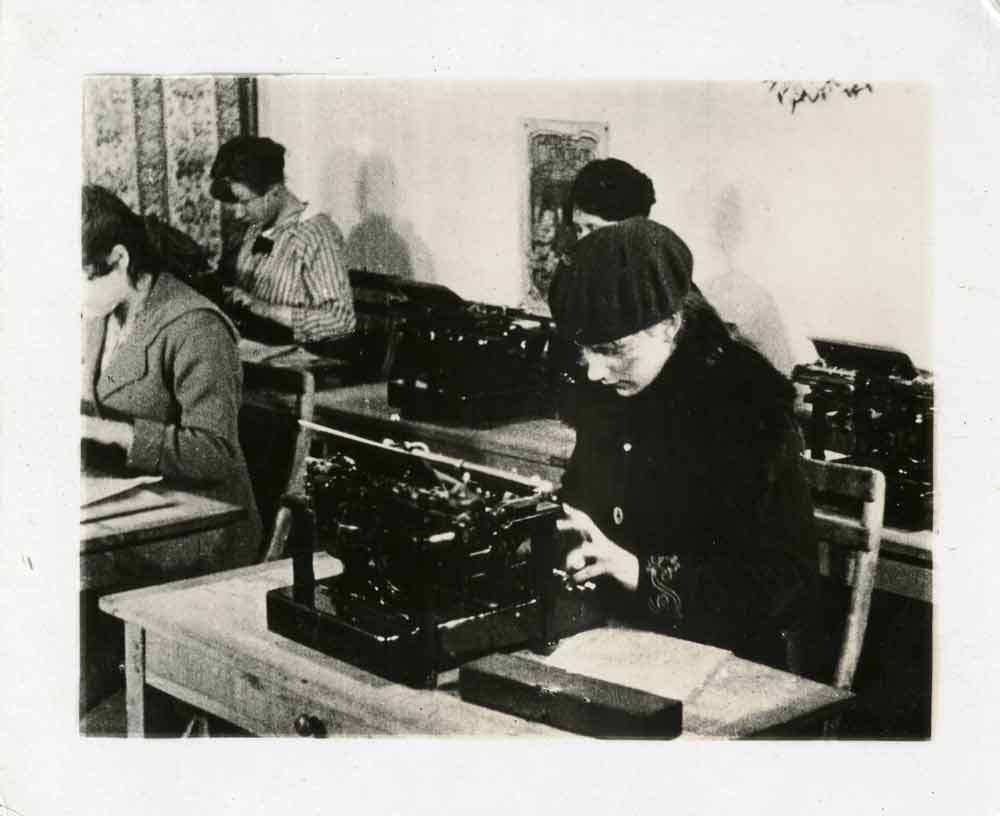

Then and now: Catholic News Service's coverage of refugees remains a priority at 100 years
Published December 7, 2019 | 🔈 This story contains audio
By Anna Capizzi Galvez
Since its founding in 1920, Catholic News Service has provided robust coverage of refugees around the world.
"Welcoming the stranger" -- a principle that has been given renewed attention in the media since Pope Francis was elected in 2013. But Catholic News Service has consistently reported on the treatment of refugees and raised awareness about their plight.
"For I was hungry and you gave me food, I was thirsty and you gave me drink, a stranger and you welcomed me," Matthew's Gospel states.
This principle concerning human dignity has motivated Catholic News Service since its earliest days to prioritize coverage of people suffering due to war, violence and conflict.






During World War I, the U.S. bishops' council sent relief workers from the U.S. to nations affected by war. In these undated photos, refugees in Poland, pictured in first three photos, and Belgium, pictured in the final three photos, receive food supplies and are taught life and work skills. Children learned about nutrition and hygiene, while women learned typing and knitting. (Photos: Archives of the U.S. Conference of Catholic Bishops)
CNS born as communications arm of U.S. Catholic bishops
The news service traces its origins to the era following the First World War.
During the war, the U.S. Catholic Church began to play a greater role in relief efforts abroad. At home, the U.S. Catholic Church gained influence "in secular society as other Christian denominations were (also) putting forth their priorities (to) the federal government, said Katherine Nuss, an archivist of the United States Conference of Catholic Bishops.
After the war, the U.S. Catholic bishops founded the National Catholic Welfare Council so that they could collectively work for and vocalize their concerns on issues like fair wages, health insurance and education -- despite being spread across the country.
CNS, then called NCWC News, helped communicate the bishops' message about faith and social justice to both the federal government and to ordinary Catholics through a wire service to diocesan papers.
The first decade of news coverage highlights worldwide plight of refugees
The Catholic News Archive, an online database of Catholic papers dating back to the 1830s, holds more than 300 NCWC stories about refugees in the 1920s. Covering the situation of refugees globally and nationally was a top priority for the news service.
Early stories reported Catholic involvement in resettling and supporting refugees from World War I. In January 1921, a Chicago correspondent wrote that 350 Polish refugee children had been brought from Siberia to a local industrial school through the direction of the archbishop.
A national committee, the correspondent added, "has undertaken to trace and to keep in touch with relatives of these children, so that when conditions are proper, they may be returned to help rebuild up the Polish nation."
NCWC news also gave attention to the genocide occurring in Asia Minor by the Ottoman Empire. "Refugee nun of Smyrna writes of her experience," is the headline given to a letter dated Sept. 22, 1922, by Sister Marie-Emmanuel narrating her flight from the then-Greek city of Smyrna, which was "being destroyed by the explosion of incendiary bombs."
Priests arriving in New York were shipped with pigs.
From 1926 to 1929, the majority of refugee stories looked to Mexico, where an ongoing battle between Catholics known as "Cristeros" and the anticlerical government under President Plutarco Elías Calles had caused a mass exodus to the U.S.
A June 6, 1927, story describes the destruction by President Calles' military in the city of Guadalajara.
"At least 30,000 men, women and children in the state of Jalisco ... have been thrust from their humble homes in the last fortnight and today are refuges without food," the lead begins.
Other stories recount how Mexican clergy endured terrible conditions to escape persecution.
"Priests arriving in New York were shipped with pigs," reveals a March 11, 1926, headline. "Bearing tales of harsh and summary treatment at the hands of their oppressors ... the first Catholic clergy to reach this city after expulsion from Mexico arrived," the story opens.
Dec. 7, 1925, story, "Armenian's plight," read by Katherine Nuss, archivist of the U.S. Conference of Catholic Bishops.
Coverage in those early years required tremendous effort, Nuss said.
"We take for granted now but the communication would have been just so much more of a struggle to get news stories and the timing, how long it would take to get things, how dangerous it was for people to write" from certain areas, Nuss said.
CNS' reach is further and faster than ever before
Nearly a century later, advances in technology and media have opened new avenues for telling the stories of refugees.
CNS international editor Barb Fraze said that in the past 10 years, communication on social media has generated story ideas and connections.
"A lot of information on refugees is actually passed through Facebook," Fraze said. "Not necessarily to cover but that is one way to monitor" what is happening locally in different countries, she added.
In 2014 while in Amman, Jordan, Fraze saw churches posting on their Facebook pages messages to refugees: "We will welcome you here." And so refugees came, as did CNS correspondents.
Technology also helps with timeliness and the output of stories.
Sometimes the refugees are fearful for their families that have remained in the country.
"During the ISIS crisis, we were doing two, three, four stories a week that summer," Fraze said, referring to 2014 when the Islamic state group took control of large areas of Iraq and Syria, killing hundreds and forcing minorities like Christians and Yazidis to flee.
But greater accessibility to stories online can complicate reporting. Some refugees ask not to be photographed or named, Fraze said.
"Sometimes the refugees are fearful for their families that have remained in the country. And that's one challenge. Another would be fear of being sent back depending on where they are," Fraze explained.
Looking ahead, the narrative about refugees is more than numbers
The United Nations refugee agency reported that number of refugees, meaning those "forced to flee their country because of conflict, war or persecution," reached 25.9 million worldwide in 2018.
"Refugees are a big part of the story right now," Fraze said. And "the Catholic Church is a huge player in refugee resettlement around the world and in aiding refugees," she said.
Nov. 17, 2014, story, "Syrian refugee in Jordan says she's 'fearful for everything,'" read by Barb Fraze, international editor at CNS.
But what helps convey the issue to readers is putting human faces on the stories and not just citing statistics, Fraze said.
One hundred years later, CNS' commitment toward informing readers by giving a voice to refugees has endured. What is left to the readers is to decide how to put their faith to action and "welcome the stranger."